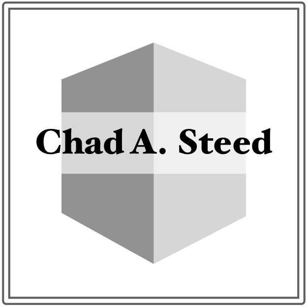

Chad A. Steed, Katherine J. Evans, John F. Harney, Brian C. Jewell, Galen Shipman, Brian E. Smith, Peter E. Thornton, and Dean N. Williams
IEEE International Conference on Big Data 2014
Dali Wang, Yang Xu, Peter Thornton, Anthony King, Chad Steed, Lianhong Gu, and Joseph Schuchart
Environmental Modeling & Software, 55:25-31, 2014
Chad A. Steed, Thomas E. Potok, Laura L. Pullum, Arvind Ramanathan, Galen Shipman, and Peter E. Thornton
4th SC Workshop on Petascale (Big) Data Analytics @ SC 2013, 2013

Arvind Ramanathan, Laura L. Pullum, Chad A. Steed, Shannon S. Quinn, Chakra S. Chennubhotla, and Tara Parker
3rd Interactive Visual Text Analytics Workshop @ IEEE VIS, 2013
Arvind Ramanathan, Laura L. Pullum, Chad A. Steed, Shannon S. Quinn,
Chakra S. Chennubhotla
IEEE VAST Workshop on Public Health's Wicked Problems: Can InfoVis Save Lives?, 2013
Chad A. Steed, Daniel M. Ricciuto, Galen Shipman, Brian Smith, Peter E. Thornton, Dali Wang, and Dean N. Williams
Computers & Geosciences, 61:71-82, 2013
2013 best paper awardpdf
Dean N. Williams, Timo Bremer, Charles Doutriaux, John Patchett, Sean Williams, Galen Shipman, Ross Miller, David R. Pugmire, Brian Smith, Chad A. Steed, E. Wes Bethel, Hank Childs, Harinarayan Krishnan, Prabhat, Claudio T. Silva, Emanuele Santos, David Koop, Tommy Ellqvist, Jorge Poco, Berk Geveci, Aashish Chaudhary, Andy Bauer, Alexander Pletzer, Dave Kindig, Gerald L. Potter, and Thomas P. Maxwell
IEEE Computer, 46(9):68-76, 2013
Chad A. Steed, J. Edward Swan II, Patrick J. Fitzpatrick, T.J. Jankun-Kelly
Innovative Approaches of Data Visualization and Visual Analytics, pp. 25-45, 2013
Robert Patton, Chad A. Steed, Chris G. Stahl, and Jim N. Treadwell
International Conference on Computational Science and Applications (ICCSA 2013), 2013
Brian Smith, Daniel M. Ricciuto, Peter E. Thornton, Galen Shipman, Chad A. Steed, and Dean Williams
International Conference on Computational Science, 2013
Arvind Ramanathan, Chad A. Steed, and Laura L. Pullum
ASE/IEEE International Conference on BioMedical Computing (BioMedCom), Dec. 2012

Chad A. Steed, Thomas E. Potok, Robert M. Patton, John R. Goodall, Christopher Maness, James Senter
2nd Interactive Visual Text Analytics Workshop @ IEEE VisWeek, Oct. 2012
Olufemi A. Omitaomu, Christopher S. Maness, Ian S. Kramer, Jeffrey B. Kodysh, Budhendra L. Bhaduri, Chad A. Steed, Rajasekar Karthik, Philip J. Nugent, Aaron T. Myers
GeoSpatial Visual Analytics Workshop @ GIScience, Sep. 2012
Songhua Xu, Brian Jewell, Chad Steed, and Jack Schryver
International Conference on Applied Human Factors and Ergonomics (AHFE), July 2012
Chad A. Steed, Galen Shipman, Peter Thornton, Daniel Ricciuto, David Erickson, and Marcia Branstetter
International Conference on Computational Science (ICCS), June 2012
Chad A. Steed, Christopher Symons, Frank DeNap, and Thomas E. Potok
Visualization and Data Analysis Conference (VDA), Jan. 2012

ParCAT: A Parallel Climate Analysis Toolkit
Blake Haugen, Brian Smith, Chad A. Steed, Daniel Ricciuto, Peter E. Thornton, and Galen Shipman
AGU 2012 Fall Meeting, 2012
Christopher Maness, Chad A. Steed, and Olufemi Omitaomu
IEEE Visualization Conference Posters Compendium, 2012
Robert M. Patton, Justin M. Beaver, Chad A. Steed, Thomas E. Potok, and Jim N. Treadwell
International Wireless Communications and Mobile Computing Conference (WCMC), 2011
Justin M. Beaver, Chad A. Steed, Robert M. Patton, Xiaohui Cui, and Matthew Schultz
SPIE Defense & Security Symposium (DSS), 2011
Massively Parallel Algorithms for Scalable Exascale Analysis
Yu Jiao, Erik Ferragut, Sudharshan Vazhkudai, Stuart Campbell, Mark Hagen, Stephen Miller, Christopher Griffin, and Chad A. Steed
ORNL Technical Report 31964, 2011
Scale Dependency in Dynamic Downscaling of Extreme Climate Events over Complex Topography
David J. Erickson, Auroop R. Ganguly, Robert James Oglesby, Evan A. Kodra, Debasish Das, Anthony W. King, Cindy Hays, Chad Steed, Robert Patton, and Chris Lenhardt
AGU Fall Meeting, 2011
Under Sea Warfare Visual Analytics: Fiscal Year 2010 Prototype System Report
Chad A. Steed, Jeffrey Russell, and J. Paquin Fabre
NRL Technical Report NRL/MR/7440-10-9285, 2010
Geophysical Data Base Variable Resolution Version 2: Final Design Report
Chad A. Steed, Chiu-Fu "Tiger" Cheng, and David W. Harvey
NRL Technical Report NRL/MR/7440–09-9229, 2010
Scale Dependency in Dynamic Downscaling of Extreme Climate Events Over Complex Topography
Debasish Das, Evan Kodra, Karsten Steinhaeuser, Shih-Chieh Kao, Auroop R. Ganguly, Marcia L. Branstetter, David J. Erickson, Raymond Flanery, Maria Martinez Gonzalez, Cynthia Hays, Anthony W. King, Christopher Lenhardt, Robert Oglesby, Robert M. Patton, Clinton M. Rowe, Alexander Sorokine, Chad Steed
AGU Fall Meeting Poster Session, 2010
Chad A. Steed, Patrick J. Fitzpatrick, T.J. Jankun-Kelly, Amber N. Yancey, and J. Edward Swan II
Computers & Geosciences, 35(7):1529-1539, 2009
Chad A. Steed, Patrick J. Fitzpatrick, J. Edward Swan II, and T.J. Jankun-Kelly
Cartography and Geographic Information Science, 36(3):251–265, 2009
Chad A. Steed, T.J. Jankun-Kelly, and J. Edward Swan II
MTS/IEEE Oceans Conference, 2009
Art Kleiner, David Alleman, Pete Alleman, and Chad A. Steed
MTS/IEEE Oceans Conference, 2009
Chad A. Steed, J. Edward Swan II, T.J. Jankun-Kelly, and Patrick J. Fitzpatrick
IEEE Symposium on Visual Analytics Science and Technology (VAST), 2009
Chad A. Steed, Patrick J. Fitzpatrick, T.J. Jankun-Kelly, and J. Edward Swan II
GeoSpatial Visual Analytics Workshop @ GIScience, 2009
Environmental Components Integrations and Dissemination (ECID) Study Preliminary Report
Kevin Shaw, John Sample, and Chad Steed
NRL Technical Report NRL/FR/7440-09-10,177, 2009
Geophysical Data Base Variable Resolution Version 2: Planning Report
Chad A. Steed and David W. Harvey
NRL Technical Report NRL/FR/7440-08-10,173, 2009
Chad A. Steed, T.J. Jankun-Kelly, J. Edward Swan II, and Robert J. Moorhead
IEEE Visualization Conference Posters Compendium, 2009
Algorithm for Bathymetry Fusion with Uncertainty Assessment
Paul Elmore and Chad A. Steed
NRL Technical Metrics Workshop, 2008
Advanced Visualization Techniques for Undersea Warfare
Chad A. Steed
NRL Technical Metrics Workshop, 2008
Paul A. Elmore and Chad A. Steed
NRL Technical Report NRL/FR/7440-08-10,162, 2008
Chad A. Steed, Patrick J. Fitzpatrick, T.J. Jankun-Kelly, and J. Edward Swan II
NRL Technical Report NRL/MR/7440-08-9130, 2008
Chad A. Steed, Patrick Fitzpatrick, T.J. Jankun-Kelly, and J. Edward Swan II
NRL Technical Report NRL/MR/7440-08-9126, 2008
AUV Data Assimilation: Requirements, Limitations, and Recommendations
Michael M. Harris, William E. Avera, and Chad A. Steed
NRL Technical Report NRL/FR/7440-08-1060, 2008
Chad A. Steed
Ph.D. Dissertation, Mississippi State University, 2008
Chad A. Steed, Patrick J. Fitzpatrick, T.J. Jankun-Kelly, Amber N. Yancey, and J. Edward Swan II
IEEE Information Visualization Conference Compendium, 2007
AN/AQS-20 Environmental Data Collection: End-to-End Demonstration 3, Tactical Sensor to Tactical Decision Aid, June 1 Through 3, 2005
Michael M. Harris, William E. Avera, John T. Sample, Chad A. Steed, Leonard D. Bibee, and Dave Morgerson
NRL Technical Report NRL/FR/7440-06-10,134, 2006
Standard Operating Procedure for the AQS-20 Rapid Transition Project: NAVOCEANO Value Added Processes
Chad A. Steed
NRL Technical Report NRL/MR/7440-06-8936, 2006
SeaBED User's Guide
Chad A. Steed, Kevyn Malpass, Edward Braithwaite, Michael M. Harris, William E. Avera, and John T. Sample
NRL Technical Report NRL/FR/7440-06-10,128, 2006
Costin Barbu, William E. Avera, Dale Bibee, Michael M. Harris, and Chad Steed
MTS/IEEE Oceans Conference, 2005
Michael Harris, William Avera, Chad Steed, John Sample, L. Dale Bibee, Dave Morgerson, Jim Hammack, and Mark Null
MTS/IEEE Oceans Conference, 2005
Chad A. Steed, John Sample, Michael Harris, William Avera, and L. Dale Bibee
SPIE Defense & Security Symposium, 2005
AN/AQS-20 Environmental Data Collection Demonstration 2, March 21-25, 2005
Michael M. Harris, William E. Avera, Chad A. Steed, and John T. Sample
NRL Technical NRL/FR/7440-05-10,113, 2005
Through-The-Sensor Determination of AN/AQS-20 Sensor Performance Demonstration 1, December 13 through 17, 2004
Michael M. Harris, William E. Avera, Chad A. Steed, Leonard D. Bibee, Warren T. Wood, William D. Morgerson, and Christopher S. Robinson
NRL Technical Report NRL/FR/7440-05-10,106, 2005
Michael Harris, Will Avera, L. Dale Bibee, Chad Steed, John Sample, Mark Null, and Jim Hammack
International Symposium on Technology and the Mine Problem, 2004
Stephanie Myrick and Chad Steed
Human Performance, Situation Awareness, and Automation Technology Conference, 2004
3 Dimensional Scene Reconstruction and Animation using VRML/X3D
Stephanie Myrick and Chad Steed
Mississippi Academy of Sciences Annual Meeting, 2004
Results of the Conversion of the OAML SST to the GDBV Format
Chad A. Steed
NRL Technical Report NRL/FR/7440-04-10,083, 2004
GAIT GDBV Quick Start Guide
Chad A. Steed
NRL Technical Report NRL/MR/7440-04-8772, 2004
Chad A. Steed, Kim Koehler, Dave Harvey, and Bruce Northridge
MTS/IEEE Oceans Conference, 2003
Kim Koehler, Michael Harris, Dale Bibee, Chad Steed, and Dave Bates
SPAWAR PMW-150 Quarterly Newsletter, Dec. 2003
Chad A. Steed and William E. Rankin
NRL Technical Report NRL/FR/7440-03-10,052, 2003
John T. Sample, Chad A. Steed, Frank P. McCreedy, and Michael M. Harris
NRL Technical Report NRL/MR/7440-03-8295, 2003
Chad A. Steed, Kim Koehler, and James E. Braud
MTS/IEEE Oceans Conference, 2002
A Method for Overcoming Discontinuity Between Neighboring UTM Zone Grids
Chad A. Steed and Hillary Mesick
Mississippi Academy of Sciences Annual Meeting, 2002
A Flat Earth Model for DBDB-V
Chad A. Steed and James E. Braud
NRL Technical Report NRL/FR/7440-02-10,025, 2002
PUMA-TEDS Technical Execution Plan
Chad A. Steed, Jerry Landrum, and Christopher Moreau
NRL Technical Report NRL/FR/7440-02-10,003, 2002